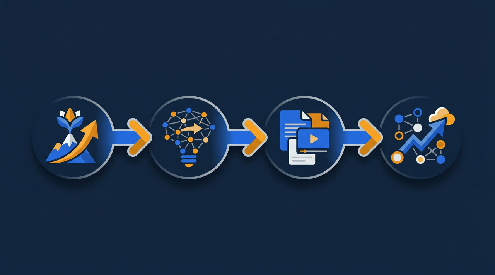

「いい人がなかなか採れない」「採れても続かない」——採用に悩む会社ほど、見落としがちな視点があります。それは、求職者が「入社後に成長できるか」を見ているということ。研修制度が整っているかどうかは、採用の競争力にも、定着にも、静かに効いてきます。この記事では、研修制度と採用力の関係、そして人が辞めにくくなる教育環境のつくり方を、実務目線で整理します。
研修制度と採用力の関係とは？
採用力というと、どうしても給与や知名度の話になりがちです。けれど、求職者が会社を選ぶとき、見ているのはそれだけではありません。「この会社に入って、自分は成長できるだろうか」——これを気にしている人は、思っている以上に多いんです。
ここに研修制度が関わってきます。研修制度が整っている会社は、入社後の育成イメージを具体的に示せます。「入って3か月でこういうことができるようになる」「最初はこの教材で学ぶ」という道筋が見えると、求職者は安心して応募できますよね。逆に、教育について何も書かれていない求人だと、「放置されるのでは」「ついていけるか不安」という気持ちが先に立ち、応募をためらわせてしまうことがあります。
とくに未経験者や若手を採りたい場合、この差は大きく出ます。経験がない人ほど「教えてもらえるか」が応募の判断材料になるからです。厚生労働省の能力開発基本調査でも、計画的な教育訓練の実施は企業の人材育成の柱として扱われていますが、それは育成される側から見れば「成長できる環境があるか」という、会社選びの基準そのものでもあるわけです。
ここで押さえておきたいのは、研修制度は「採ってから育てる仕組み」であると同時に「採るための見せ方」でもある、という二面性です。社内向けに整えた教育環境が、そのまま採用の場面で会社の魅力として働く。この両面を意識すると、研修への投資が採用コストの面でも効いてくることが見えてきます。
採用にかかる費用は、求人広告や紹介手数料だけではありません。採っても早期に辞められれば、また採り直しの費用がかかりますし、その間の採用担当や現場の負担も積み上がります。教育環境を整えて定着を支えることは、こうした採り直しのコストを抑える取り組みでもあるわけです。一度作った教育の仕組みは、採用のたびに繰り返し効いてくるので、長い目で見ると採用の効率そのものを底上げしてくれる、と考えられます。
なぜ求職者は「教育環境」を見るのか
そもそも、求職者はどうして教育環境を気にするのでしょうか。理由を整理すると、いくつかのパターンが見えてきます。
1. 入社後の不安を減らしたいから
転職や就職は、誰にとっても大きな決断です。新しい環境でやっていけるか、という不安は当然あります。研修制度が示されていると、「最初はサポートしてもらえる」という安心につながり、応募のハードルが下がります。これは未経験の分野に挑戦する人ほど強く働きます。
2. 成長できる会社かを見極めたいから
働く期間が長くなるほど、「ここで自分は成長できるか」は重要になります。研修や教育の仕組みがある会社は、人を育てる姿勢がある会社だと受け取られます。逆に「即戦力だけ求める」「教育は特にない」という印象だと、長く働くイメージを持ちにくくなってしまうんです。
3. 会社の本気度が見えるから
教育環境は、会社が人材にどれだけ投資しているかの表れでもあります。きちんと教材を整え、学べる環境を用意している会社は、人を使い捨てにしない会社だと伝わります。求職者は、待遇の数字だけでなく、こうした姿勢も含めて会社を見ているわけですね。とくに、転職を何度か経験している人ほど、入って放置された経験を持っていることがあり、教育への姿勢を敏感に見ていることが多いものです。
実際にあった例を挙げます。ある中小企業が、求人票に「研修あり」とだけ書いていたときは、応募が伸び悩んでいました。そこで、入社後3か月の育成の流れと、動画で学べる教材があることを具体的に書き加えたところ、応募者から「教育環境が整っていそうだったので応募した」という声が増えたそうです。やっていること自体は同じでも、見せ方を変えただけで採用の反応が変わる。教育環境は、伝わって初めて採用力になるということですね。
研修制度が人材定着につながる理由
採用は入口にすぎません。せっかく採っても、すぐ辞められてしまっては元も子もありませんよね。ここでも研修制度が効いてきます。
- 入社直後の「教えてもらえない不安」を減らし、立ち上がりを支える
- 何をどこまでできればよいかが分かり、新人が自信を持ちやすい
- 成長を実感できる場があり、「この会社にいる意味」を感じやすい
- 教える側の負担が減り、新人への当たりがやわらぐ
- 育成の流れが仕組みになり、受け入れの当たり外れが小さくなる
早期離職の背景には、入社直後の放置や「成長している実感が持てない」という気持ちが挙げられることが多いものです。入ってみたら誰も教えてくれず、何をすればいいか分からないまま時間が過ぎる——これは新人にとってかなりつらい状況です。研修制度やオンボーディング（受け入れ・立ち上がりの支援）が整っていると、この最初の不安定な時期を支えられます。
もう少し具体的に考えてみましょう。入社初日に、何を学ぶかが決まっていて、動画やマニュアルで自分のペースでも復習できる環境がある。分からないことがあっても「これを見ればいい」という拠り所がある。こういう状態だと、新人は「ちゃんと迎えられている」と感じられますよね。逆に、教える人がその日の忙しさで対応が変わり、聞ける相手も日によって違う、という状態だと、新人は落ち着けません。受け入れの体験が、定着の最初の分かれ目になるわけです。J-Net21などの中小企業向けの情報でも、採用と定着はセットの経営課題として繰り返し取り上げられています。
定着の効果は、辞めない人が増えるだけにとどまりません。先に入った人がきちんと育って戦力になれば、その人が次の新人を迎える側に回れます。育成の仕組みがあると、こうして「育った人が次を育てる」という流れが生まれ、受け入れの負担が一部の先輩に集中しにくくなります。逆に定着が弱いと、いつまでも同じ人が新人対応に追われ、その負担がまた離職の引き金になる、という悪い循環に入りかねません。研修制度は、この循環を良い方向に回すための、いわば回転の軸になるわけです。
なお、教育環境が定着に効くのは、新人だけの話ではありません。学べる仕組みがあると、すでにいる社員も新しい業務や役割に挑戦しやすくなります。「やったことがないから不安」という気持ちを、学べる環境がやわらげてくれるからです。成長の機会が社内にあること自体が、長く働き続ける理由のひとつになる、と考えられます。
求職者に伝わる教育環境を整える進め方
では、採用力にも定着にもつながる教育環境を、どう整えていけばいいのでしょうか。一気に大きな研修体系を作ろうとすると続かないので、次の流れで小さく始めるのがおすすめです。
ステップ1：入社後にいつも教えている内容を書き出す
まずは、新人が入るたびにいつも説明していることを書き出します。社内ルール、基本の業務手順、よく使う道具やシステムの使い方など。毎回口頭で伝えているものほど、教材にする価値があります。ここが教育環境づくりの出発点になります。書き出してみると、「これだけは最初に伝えている」という共通の項目が見えてくるはずです。その共通項こそ、教材化すると効果の大きい部分なんですね。
ステップ2：繰り返す説明を動画やマニュアルに残す
書き出した内容のうち、毎回同じことを説明している部分を、動画やマニュアルにします。スマートフォンでの撮影で構いません。動画にしておくと、新人は何度でも見返せますし、教える側は同じ説明を繰り返さずに済みます。基礎を教材に任せられると、現場では個別のサポートに時間を使えるようになります。
ステップ3：学べる環境を1か所にまとめる
作った教材は、学習管理システム（LMS）のような1か所に集約します。誰がどこまで学んだかも記録できるので、受け入れの進み具合が把握しやすくなります。教材が散らばっていると、結局どこにあるか分からなくなって使われなくなるので、まとまっていることが大切です。
ステップ4：その教育環境を求人で具体的に見せる
整えた教育環境は、採用の場面で具体的に示します。「研修あり」で終わらせず、入社後の流れ、学べる教材、サポートの体制を書く。動画やオンラインで学べる環境があるなら、それも伝える。社内向けに整えたものを、そのまま採用の魅力として打ち出すわけです。求人票だけでなく、面接の場でも実際の教材を見せながら説明すると、求職者は入社後をより具体的にイメージしやすくなります。

中小企業こそ教育環境を「見せる」価値がある
大企業のような大規模な研修体系がないと、教育環境はアピールできない——そう思い込んでいる会社は少なくありません。けれど、それはもったいない考え方です。
中小企業には、むしろ強みがあります。規模が小さいぶん、一人ひとりに目が届きやすく、教育を「丁寧な個別の育成」として打ち出せることが多いんです。大きな体系がなくても、入社後の流れがきちんと示され、学べる教材があり、聞ける相手がいる。求職者が知りたいのは、立派な研修制度の名前ではなく、「自分が入ったらどう育ててもらえるか」という具体的なイメージのほうです。
ここで動画とLMSが効いてきます。これまで先輩が口頭で教えていた内容を動画にしてLMSに集めれば、少人数の会社でも「整った教育環境」を持てます。新人は自分のペースで学べ、教える側の負担も減る。そしてその環境を求人で見せれば、規模では大企業に及ばなくても、「ここなら成長できそうだ」という印象で選ばれる余地が生まれます。教育環境の整備は、採用と定着の両方に効く投資なんですね。
費用の面でも、毎回外部講師を呼ぶより、ノウハウを動画に残して繰り返し使うほうが抑えられる場合があります。さらに、研修の動画化やeラーニングの整備には、人材開発支援助成金のように、訓練にかかった経費や賃金の一部を国が助成する制度を活用できる場合があります。費用を抑えながら教育環境を整え、それを採用力に変えていく——この道筋は、中小企業にとって十分に現実的だと考えられます。
まとめ：教育環境を整え、採用と定着の両方に効かせる
研修制度は、単に人を育てる仕組みにとどまりません。求職者から見れば「成長できる会社か」を判断する材料であり、入社後の人にとっては「ここで働き続ける意味」を支える土台でもあります。採用力と人材定着、その両方に研修制度は静かに効いているわけです。
大きな研修体系を一気に作る必要はありません。入社後にいつも教えている内容を書き出し、動画やマニュアルに残し、学習管理システムに集約する。そして、その教育環境を求人で具体的に見せる。この流れができると、教育は「採ってから育てる仕組み」であると同時に「採るための魅力」としても働き始めます。
なお、こうした教育環境の整備には、人材開発支援助成金のように、訓練にかかった経費や賃金の一部を国が助成する制度を活用できる場合があります。費用面と仕組みの両方から、自社に合った進め方を検討してみてください。「採れない」「続かない」を変える糸口として、まずは入社後にいつも教えている内容を1つ、教材として残すところから始めてみるのがよいでしょう。
よくある質問
求職者は給与や仕事内容だけでなく「入社後に成長できるか」を重視する傾向があります。研修制度が整っていると、入社後の育成イメージが具体的に伝わり、応募の判断材料になります。とくに未経験者や若手の採用では、教育環境の有無が応募の決め手になることが多いと考えられます。
研修だけで離職がなくなるわけではありませんが、入社直後の放置や「教えてもらえない不安」を減らす効果が期待できます。早期離職の理由には成長実感の欠如や受け入れ体制の弱さが挙げられることが多く、研修・オンボーディングの整備は定着を支える土台になります。
できます。大企業のような大規模な研修体系がなくても、入社後の流れ・教材・サポート体制を分かりやすく示せば、求職者には十分に伝わります。むしろ規模が小さいほど、一人ひとりに目が届く育成として打ち出せる場合があります。
「研修あり」とだけ書くより、入社後の流れを具体的に示すと伝わりやすくなります。最初の数週間で何を学ぶか、誰が教えるか、いつ一人立ちするのかといった道筋を示すと、求職者は入社後をイメージしやすくなります。動画やオンラインで学べる環境があれば、それも記載すると効果的です。
進め方によって幅があります。既存のノウハウを動画にして学習管理システム（LMS）に集約する形であれば、外部講師を毎回呼ぶより費用を抑えられる場合があります。また人材開発支援助成金のように、訓練の経費や賃金の一部を助成する制度を活用できる場合もあるため、費用面とあわせて検討するとよいです。
まずは入社後にいつも教えている内容を書き出し、動画やマニュアルとして残すところから始めると着手しやすいです。それをLMSに集約すれば、新人が自分のペースで学べる環境になり、求職者にも「整った教育環境」として示せるようになります。